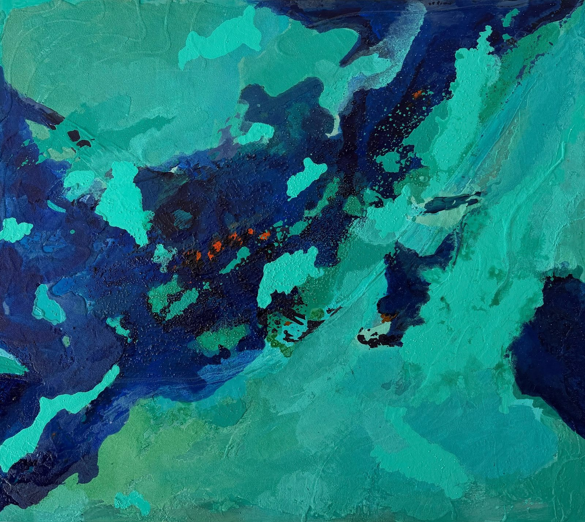
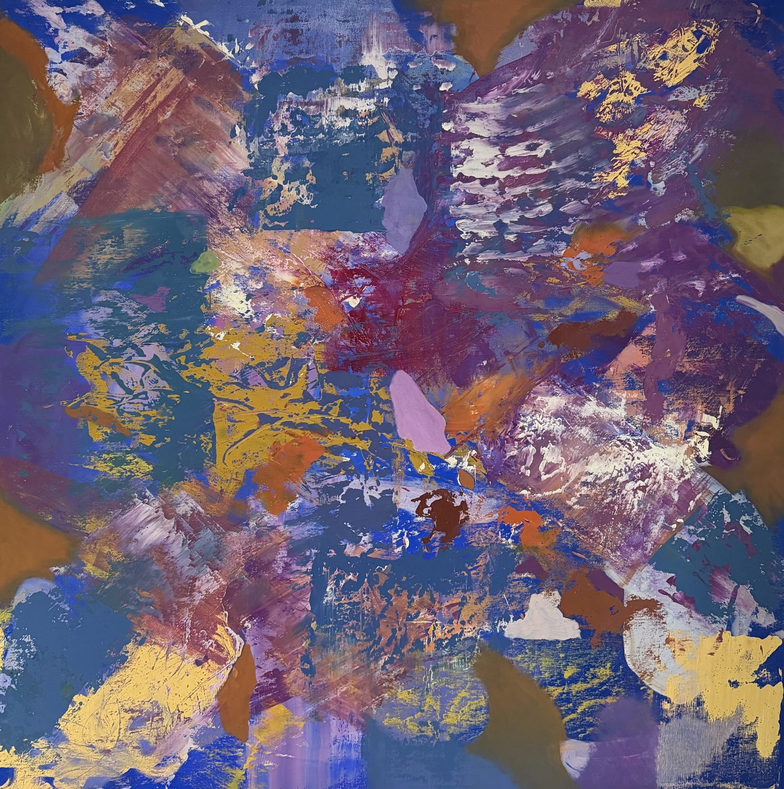
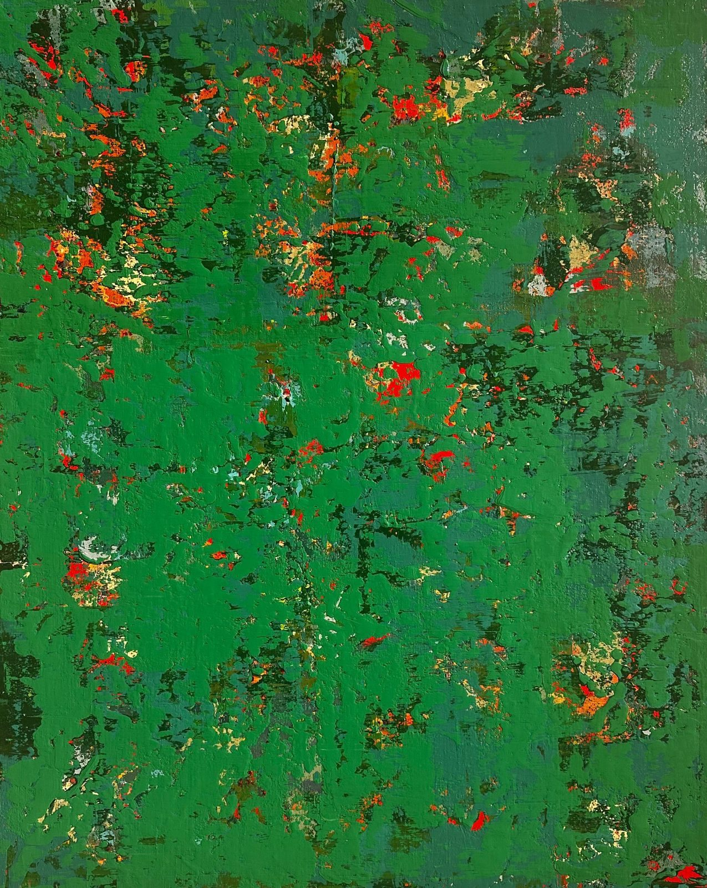
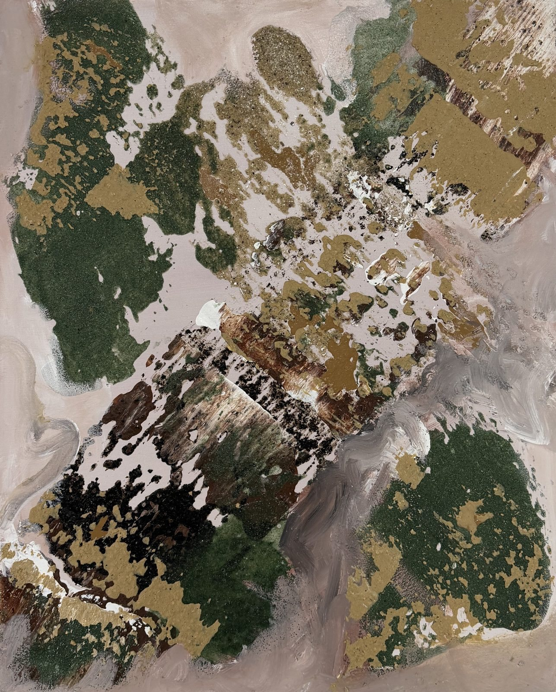
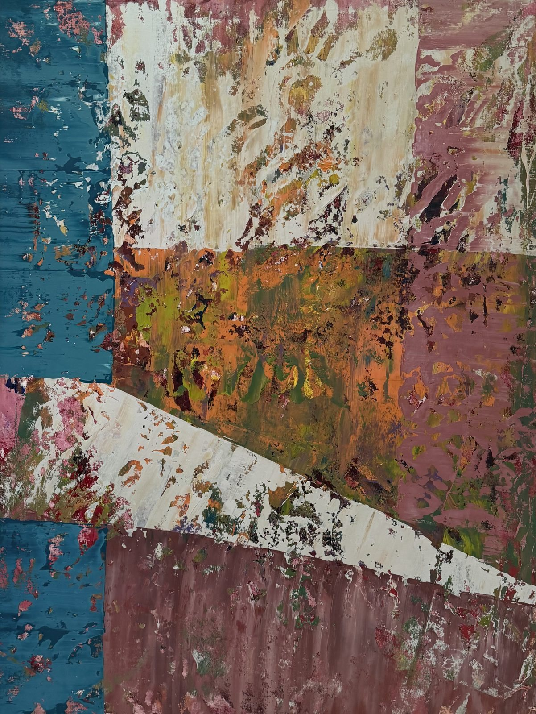
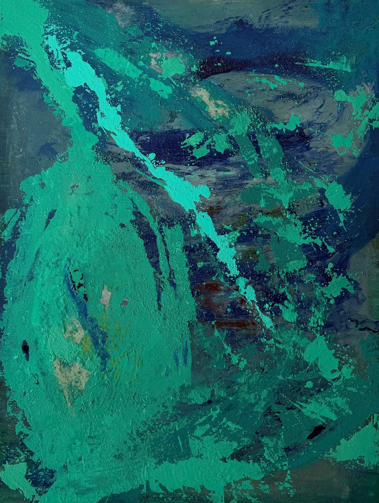

Helenara Andrade · Pintura
Mar em ChamasSérie Campos de Cor · 2023Presença VeladaSérie Temporalidades · 2026Matéria em EmersãoSérie Estados da Matéria · 2026InterferênciasSérie Forças da Matéria · 2026FrequênciasSérie Interferências · 2025EntrecamadasSérie Temporalidades · 2026ResistênciaSérie Forças da Matéria · 2026Matéria em ExpansãoSérie Estados da Matéria · 2026Série em destaque
Temporalidades
Exploro a construção da pintura por camadas, em que gestos, sobreposições e apagamentos deixam registros de diferentes momentos do processo.
Ver a série · 8 obrasSéries